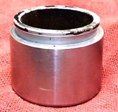

The lever or pedal feels soft, like squeezing a rubber ball, instead of firm. It moves further than normal before the brake bites, and you can push it further still. On a hydraulic (disc) brake this almost always means air in the fluid, old fluid that has boiled, or a hose that swells. On a cable drum brake a soft feel comes from a stretched cable or worn shoes.
Is it safe to ride?
No. A spongy brake can go all the way to the bar in an emergency stop. Do not ride until the lever is firm.
Quick checks first
- Is this a hydraulic brake (reservoir on the bar, hose to the wheel) or a cable or rod brake?
- Look at the fluid level in each reservoir. Below LOWER?
- Look for wet fluid at the caliper, hoses and lever.
- Did someone just change pads, open a hose or bleed the brakes?
- Pump the lever several times: does it get firmer?
- If pumping the lever does nothing, air may be trapped at a fitting. Bleed at every fitting on the line, including where the hose meets the master cylinder, and tap the fittings lightly to free bubbles.
- Some systems fill more easily from the bleed screw upward, using a pump and a catch jar.
Diagnose it step by step
1Is the brake hydraulic?
- No (cable or rod drum brake): the cable may be stretched or sticky, or the shoes worn. Go to Adjust a drum brake and then Drum brake is weak.
- Yes: go to step 2.
2Is the fluid level above LOWER in every reservoir (including the CBS reservoir if fitted)?
- No: do not just top up. A low level means worn pads or a leak. Do Check brake pad wear and go to Brake fluid is leaking. If the level fell so far that air got in, the brake must be bled.
- Yes: go to step 3.
3Were the pads just changed or pushed back?
- Yes: pump the lever 5 to 10 times with the bike still. If it becomes firm and stays firm, the pistons had moved back and there is no fault.
- No, or still soft after pumping: go to step 4.
4Do any hoses bulge, crack or leak when you squeeze hard?
- Yes: replace the hose and bleed. See Check brake hoses and banjo bolts.
- No: go to step 5.
5Is the fluid dark, or did the sponginess start after hard or long braking (a hill)?
- Yes: old fluid holds water and boils when hot, making vapour bubbles. Replace it: Replace brake fluid and bleed the brakes. Also see Brakes get weaker when hot.
- No: go to step 6.
6Does the bike have CBS or ABS?
- Yes: a simple bleed may not reach all circuits. Go to Check a combined braking system (CBS) or Diagnose an ABS warning light. Workshop.
- No: bleed the brake carefully with Replace brake fluid and bleed the brakes. Go to step 7.
7Is the lever still soft after a careful bleed?
- Yes, and it also sinks when held: worn master cylinder cups. Go to Check the brake master cylinder. If fluid shows at a caliper piston: Rebuild a brake caliper. Workshop.
- No: fixed. Test at walking speed before riding.
What happens if you keep riding: the air bubbles grow when the brake gets hot, and the lever can reach the bar without stopping the bike.
Causes, most likely first
| Cause | How to confirm | Fix |
|---|---|---|
| Air in the system | Soft lever that firms a little with pumping; recent work | Replace brake fluid and bleed the brakes |
| Old fluid boiling | Dark fluid; soft after hard use | Replace brake fluid and bleed the brakes |
| Low fluid from wear or leak | Level below LOWER; wet fitting | Check brake pad wear, Check brake hoses and banjo bolts |
| Swelling hose | Hose bulges when lever squeezed | Replace hose, then bleed |
| CBS or ABS circuit not bled | CBS or ABS bike, recent hydraulic work | Check a combined braking system (CBS) |
| Worn master cylinder cups | Lever also sinks; no outside leak | Check the brake master cylinder |
| Stretched cable, worn shoes (drum) | Cable brake; adjuster near its end | Adjust a drum brake |
Reference values (K-Light 125)
| Item | Value | Source |
|---|---|---|
| Front lever free play at the tip | 10 to 20 mm | K-Light 125 manual, PDF p. 61 |
| Brake fluid | DOT4 | K-Light 125 manual, PDF p. 65 |